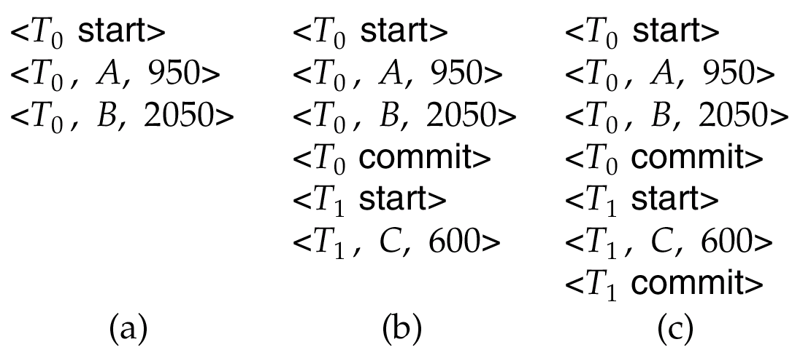
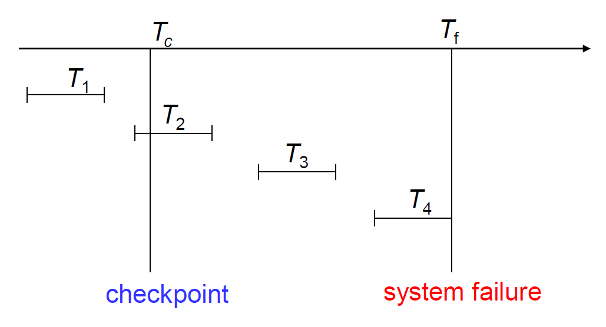
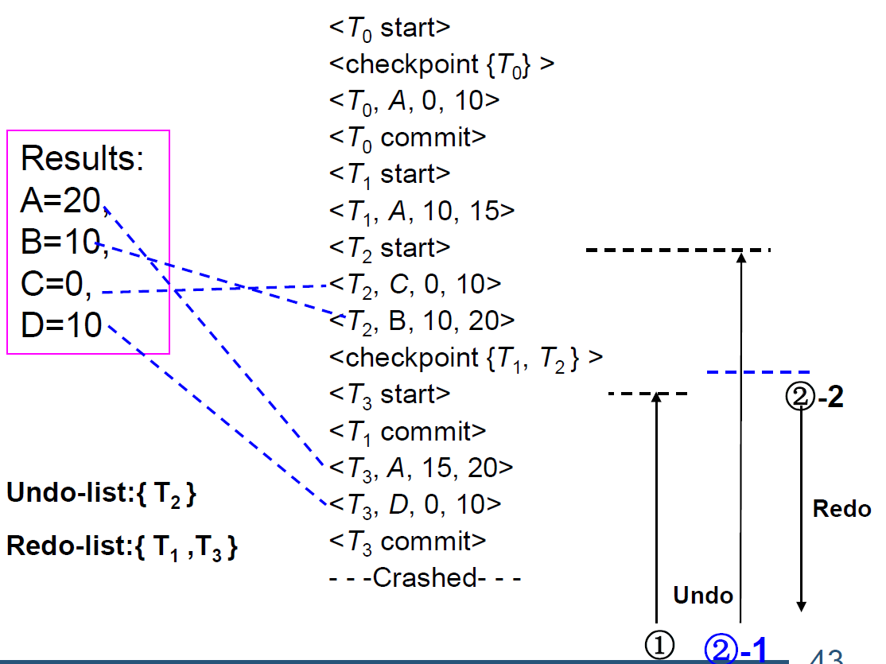
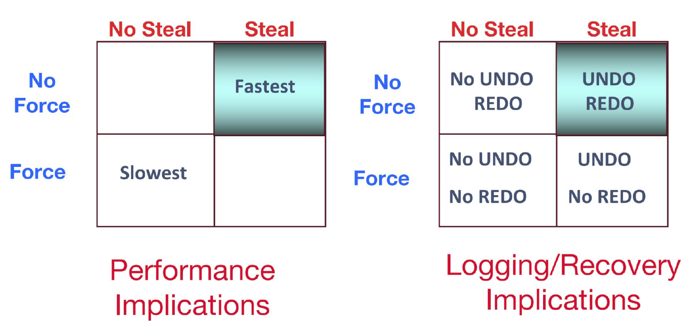
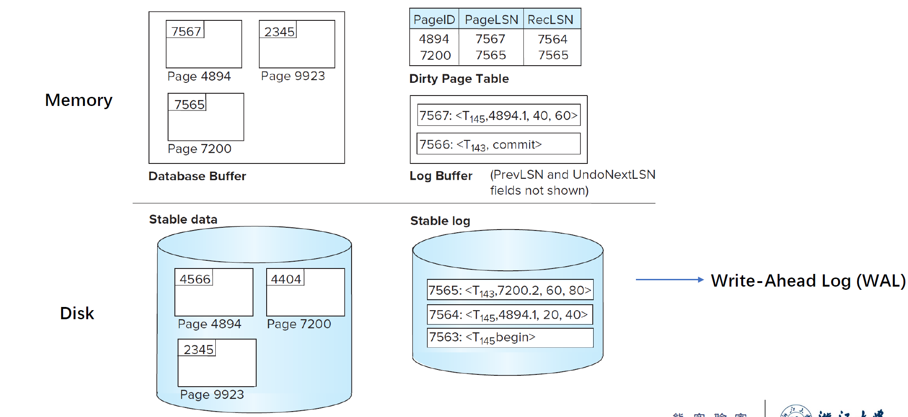
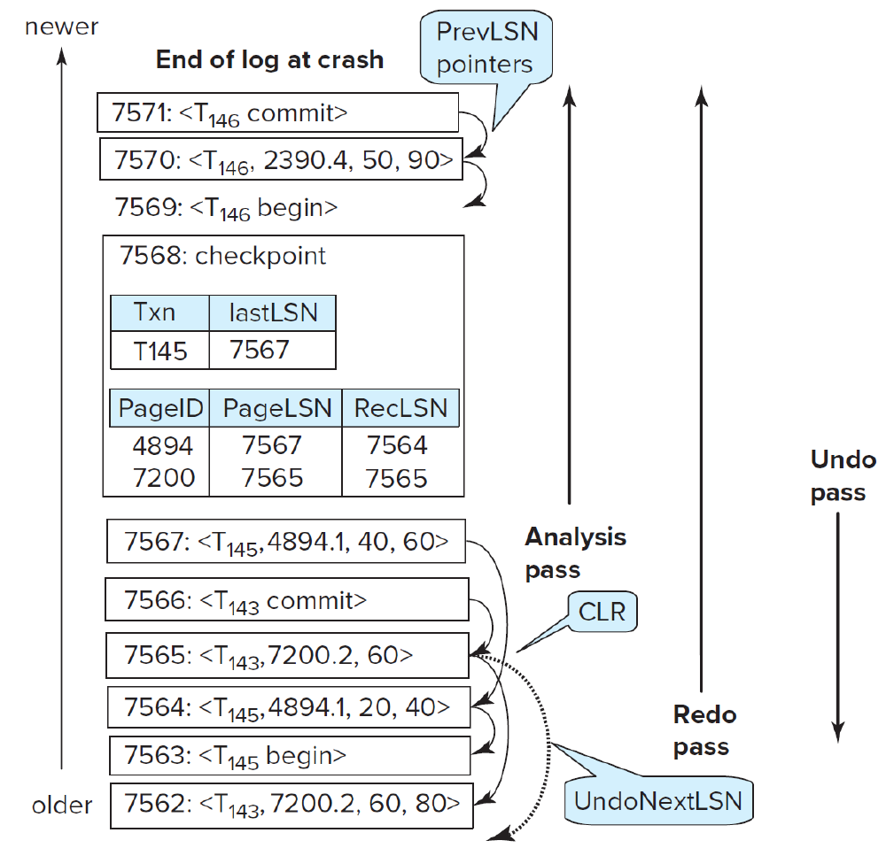

Recovery System¶
Failure Classification¶
1. Transaction Failure:
- 逻辑错误：由于某些内部错误条件导致事务无法完成：溢出，错误输入，未找到数据，…
- 系统错误：由于错误情况（例如死锁），数据库系统必须终止一个活动事务。
2. System Crash:
- 电源故障或其他硬件或软件故障导致的系统崩溃
3. Disk Failure
Recovery Algorithms¶
分为两个部分：
- 在正常事务处理期间采取的操作，以确保存在足够的信息以从故障中恢复
- 将数据库内容恢复到确保原子性、一致性和持久性的状态失败后所采取的操作
Log-Based Recovery¶
通过一系列日志记录，维护数据库上的更新活动记录
-
事务开始:
<Ti start> -
写数据:
<Ti, X, V1, V2>(在事务Ti中把X的值由V1更新为V2) - 事务结束:
<Ti commit>
对于日志的使用，用两种方式：
- Deferred database modification(延迟修改)
- Immediate database modification(立即修改)
主要区别在于何时将事务的修改写入物理数据库
Deferred Database Modification¶
事务直到提交的那一刻才对数据库进行修改。

对于以上三种情况的处理：
(a) 不需要进行redo
(b) 由于 \(T_0\) 已经commit了，需要对 \(T_0\) 进行redo
© 由于 \(T_0\) 比 \(T_1\) 先commit，对于 \(T_1\) 的redo需要在 \(T_0\) 之后
Immediate Database Modification¶
在事务活跃期间便对数据库进行修改。
Note
更新日志必须在写入数据库项之前写入
相比于延迟修改，立即修改有两种恢复操作：
undo(Ti): 从 Ti 的最后一条日志记录开始，将 Ti 所有更新的数据项都恢复到旧值。在log包含<Ti start>但是不包含<Ti commit>时进行。redo(Ti): 从 Ti 的第一条日志记录开始，将 Ti 所有更新的数据项设置成新值。在log同时包含<Ti start>和<Ti commit>时进行。
undo操作优先于redo操作
Checkpoints¶
<checkpoint L>，其中L为活跃事务表。
在进行checkpoint时需要把之前所有脏数据写入磁盘。
（恢复算法详细见[Recovery With Concurrent Transactions])

对于以上情况：
- \(T_1\) 不做处理
- \(T_2.T_3\) 进行redo
- \(T_4\) 进行undo
Recovery With Concurrent Transactions¶
-
将 undo-list 和 redo-list 设为空
-
从下往上进行扫描，直到找到第一个
<checkpoint T>，在此过程中：
如果遇到
<Ti commit>，则将 Ti 加入redo-list；如果遇到
<Ti start>且 Ti 不在redo-list里，则加入undo-list；如果遇到
<Ti abort>，则将 Ti 加入undo-list。
-
对于所有位于活跃事务表
L中的 Ti，如果不在 redo-list 里，则加入 undo-list -
从日志文件的末尾向后扫描日志，并进行undo操作。当所有undo-list里的Ti对应的
<Ti start>记录都遇到后停止。 -
找到最近的
<checkpoint L> -
从
<checkpoint L>开始向下，对所有关于redo-list中事务的日志记录执行redo。
Example¶

Buffer Management¶
如果要缓冲日志记录，必须遵守以下 4 条规则：
- 日志记录按创建顺序输出到稳定存储区。
- 只有当日志记录
<Ti commit>被输出到稳定存储时，事务才会进入提交状态。 - 在
<Ti commit>输出到稳定存储之前，与 Ti 相关的所有日志记录必须已输出到稳定存储区。 - 在将主内存中的数据块输出到数据库之前，与该数据块中的数据有关的所有日志记录必须已输出到稳定存储器。(日志应先于数据写到磁盘）。此规则称为先写日志规则（write-ahead logging rule）或 WAL。
将数据块输出到磁盘：
- 首先获取数据块上的独占锁存，确保数据块上没有正在进行的更新
- 然后执行日志刷新
- 然后将数据块输出到磁盘
- 最后释放块上的锁
Failure with Loss of Nonvolatile Storage¶
定期对整个数据库进行备份(dump)，在稳定存储的log中加入<dump>记录。
出现损坏时，从备份的上一个<dump>开始恢复数据。
ARIES Recovery Algorithm¶
Policy¶
Steal/No-Steal Policy¶
- No-Steal Policy: 在事务提交之前，不能将页面从内存中删除（因此也不能写入磁盘）
- Steal Policy: 可以提前将数据写回磁盘（会增大恢复难度）
Force/No-Force Policy¶
- Force Policy: 当事务结束时，在事务提交前将所有修改过的数据页强制存入磁盘。（更容易恢复）
- No-Force Policy: 事务提交时，数据不一定已经全部写回（速度更快，但会增大恢复难度）
在ARIES算法中，采用了 Steal+No-Force 策略。

ARIES Data Structures¶
- Log sequence number (LSN): 表示每条log记录（必须顺序增加；通常是从日志文件开头开始的偏移量，以便快速访问）
- 不同类型的Log records
- Dirty page table
- PageLSN: 最后哪条log记录动了这个page

Checkpoint¶
包含Dirty Page Table和活跃事务表
对于每个活动事务，LastLSN 是事务写入的最后一条日志记录的 LSN
（磁盘上的固定位置注有最后完成的检查点日志记录的 LSN）
Fuzzy Checkpoint¶
ARIES算法使用模糊检查点。
脏页不会在检查点时间写出，而是在后台持续刷新。因此，检查点的开销非常低，可以经常进行。
Recovery Algorithm¶
分析阶段¶
找到最后的完整检查点日志记录，读出 Dirty Page Table，从中获取 redo 的起点 RedoLSN（即Dirty Page Table中所有RecLSN的最小值）。将 undo-list 写为活跃事务表，然后开始向下扫描，遇到不在 undo-list 中的则加入，遇到事务结束则从 undo-list 中移除，同时加入 Dirty Table Page 并将 RecLSN 设为当前的LSN。
redo阶段¶
从RedoLSN开始向下扫描，跳过不在脏页表中或 LSN 小于脏页表中该页 RecLSN 的日志记录，其余的全部重做。
undo阶段¶
反向扫描，对 undo-list 内的记录进行 undo 操作，并在日志里加入只读记录 <Ti, Xj, V1>，如果遇到 <Ti start>，则写入 <Ti abort>并将 Ti 从 undo-list中删除。直到 undo-list 为空。

Features¶
Recovery Independence¶
页面可以独立于其他页面进行恢复。
如果某些磁盘页面发生故障，可以在其他页面正在使用时从备份中恢复 。
Savepoints¶
事务可以记录保存点，并回滚到保存点。
- 对于复杂事务很有用
- 也可用于回滚到足以释放死锁的锁
Fine-grained locking¶
可以使用允许对索引进行元组级锁定的索引并发算法。
- 这些算法需要逻辑撤销，而不是物理撤销，如早期的恢复算法。
Recovery optimizations¶
在重做过程中，可以使用脏页表来预取页面。
可以不按顺序重做：
- 可以在从磁盘获取页面时推迟重做，并在获取页面时执行重做。
- 同时可以继续处理其他日志记录